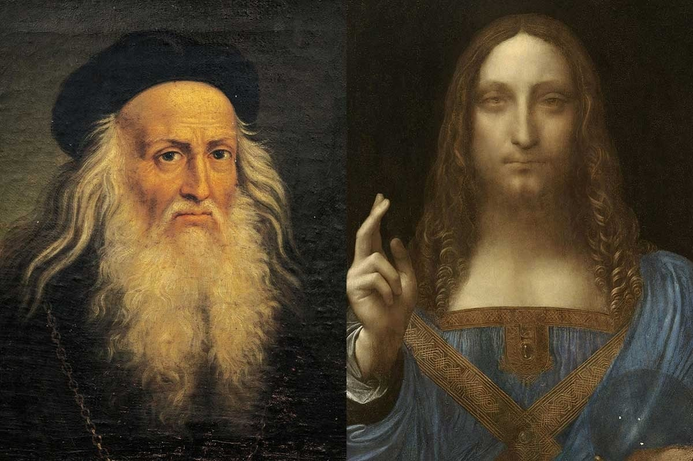

"Hindernisse brechen mich nicht. Jedes Hindernis lässt sich mit Beharrlichkeit beseitigen."
Leonardo da Vinci
- Biography
- First Florentine period (1472–c. 1482)
- First Florentine period (1472–c. 1482)
- First Milanese period (c. 1482–1499)
- Second Florentine period (1500–1508)
- Second Milanese period (1508–1513)
- Rome and France (1513–1519)
- Personal life
- Paintings
- Early works
- Paintings of the 1480s
- Paintings of the 1490s
- Paintings of the 1500s
- Drawings
- Journals and notes
- Science and inventions
- Anatomy and physiology
- Engineering and inventions
- Legacy
- Location of remains
- Notes
- References
- Citations
- Works cited
- Further reading
- External links
Da ich einsehe, dass ich einen Stoff von großem Nutzen und Reiz nicht mehr wählen kann, weil die vor mir geborenen Menschen schon alle nützlichen und notwendigen Themen vorweggenommen haben, so will ich es machen wie einer, der wegen seiner Armut zuletzt auf den Jahrmarkt kommt und dort, zumal er sich nicht anders versorgen kann, all jene Sachen nimmt, welche die anderen schon angesehen und nicht genommen, sondern wegen ihres geringen Wertes zurückgelassen haben.